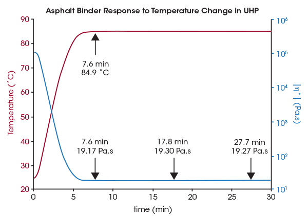

The new Discovery series Dynamic Shear Rheometers (DSRs) for asphalt testing are the latest generation of rotational rheometers from TA Instruments. Combining the patented magnetic bearing design with the superior drag cup motor technology, the new Discovery Hybrid Rheometer (DHR) delivers exceptional performance in a rugged package. The DSR is powered by the user-friendly FastTrack software package, designed exclusively for ASTM and AASHTO compliant testing, that intuitively guides the operator for routine testing with minimal training. The DSR can be equipped with an extensive variety of modular configurations to accommodate the widest range of tests, from QC lab testing to advanced research and development. These include the convenient and responsive Dry Asphalt system, the Environmental Test Chamber (ETC), Peltier and Electrically heated concentric cylinders, and geometries for torsional and tribology testing.
With its unique combination of state-of-the-art hardware and easy to use software, the Discovery series DSRs from TA Instruments offers a comprehensive package tailored specifically for the requirements of the asphalt community. Backed by TA Instruments, the world leader in thermal analysis and rheology instrumentation, the Discovery Hybrid Rheometer is fully accessorized and is capable of meeting and exceeding the requirements mandated by current and future ASTM and AASHTO standards.
- Compliant with AASHTO T315, T350, M332, TP-101, TP-123, T316, ASTM D7175, D7405
- Smart Swap™ technology
- Wide temperature ranges:
- Dry Asphalt system: -30 °C* to 150 °C
- Environmental Test Chamber (ETC): -160 °C to 600 °C
- Peltier concentric cylinder: -20 °C* to 150 °C
- Key features of dry asphalt system:
- Eliminates vertical temperature gradients
- Compatible with Peltier liquid cooling, circulator, or gas cooling options
- Patented heat spreader technology for optimum heat transfer
- Substantially reduces thermal equilibrium time
- Turnkey system for asphalt testing – includes the following:
- 8 mm and 25 mm parallel plates
- Sample molds
- Sample trimming, plate removal tools, and environment cover (Dry asphalt system only)
- Optional 4 mm plates available
- Automated temperature calibration, guided by FastTrack software
* With appropriate cooling device
The true test of any rheometer temperature control system is to compare sample response to the reported system temperature. This evaluation is especially important for a combined lower Peltier device with intimate contact heating and an upper non-contact heating device. In this situation, the top plate heats more slowly than the bottom plate. Because the top and bottom plates heat at different rates, the sample temperature differs greatly from the reported system temperature. In competitive systems, the sample response lags the temperature profile, requiring the user to determine system-based thermal equilibration times and program long delays. This issue is eliminated with TA’s unique UHP design, by continuously controlling and matching the upper and lower plate temperatures. This accurate response is demonstrated in the following figure with simple oscillation time sweep measurements.

The figure shows a test performed on an Asphalt binder sample which, according to federal standards, cannot be tested until temperature is fully equilibrated to within 0.1 °C of the set-point. The data show that the complex viscosity response exactly follows the reported temperature profile, proving that there is no lag between set-point and real sample temperature – as soon as the temperature is within 0.1 °C, the viscosity of the asphalt binder is fully equilibrated and no change is seen in the viscosity even after 20 additional minutes. By matching upper and lower temperature and heating rates, TA provides the most advanced and accurate non-contact heating technology.